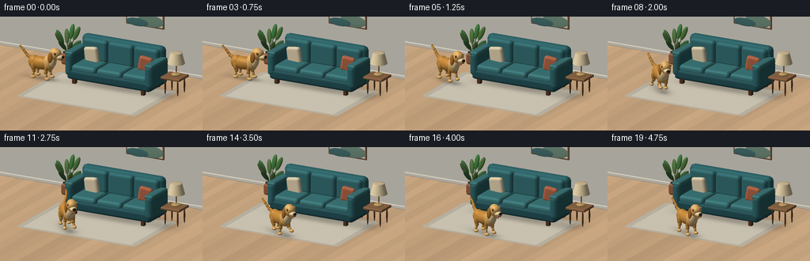
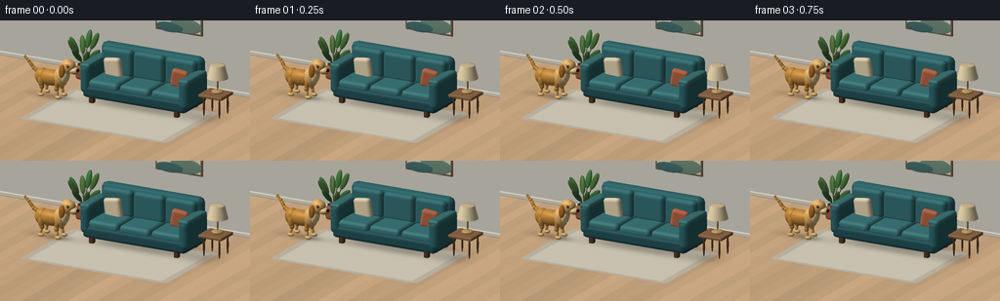

CODING AGENTS AS PIXEL WORLD MODELS
traex/GPT-6.1-Sol · dynamic_spatial_relationship_0001
点击播放 · 原生 RGB 像素
逐轮保存的候选
回放视频、检查图与代码变化。
每份候选均可单独播放。实际图片检查记录在下方工具轨迹中。
候选 01播放与检查图
点击播放 · 原生 RGB 像素


展开代码变化
--- 上一保存版本
+++ 本次保存版本
@@ -0,0 +1,311 @@
+"""Procedural RGB animation: a golden dog runs from beside a sofa to its front.
+All geometry, lighting, textures, and motion are generated locally with numpy.
+"""
+from pathlib import Path
+import math
+import numpy as np
+from PIL import Image
+import artifact_io
+
+ROOT=Path(__file__).resolve().parent
+W,H=768,432
+S=3
+LIGHT=np.array([-3.,7.,5.]); LIGHT/=np.linalg.norm(LIGHT)
+EYE=np.array([4.6,3.8,8.4]); TARGET=np.array([0.,.65,0.])
+F=(TARGET-EYE); F/=np.linalg.norm(F)
+R=np.cross(F,[0,1,0]); R/=np.linalg.norm(R)
+U=np.cross(R,F)
+SCALE=W/8.1
+
+
+def project(p):
+ p=np.asarray(p); q=p-TARGET
+ return np.stack([W/2+q@R*SCALE,H/2-q@U*SCALE,q@F],axis=-1)
+
+def norm(v):
+ return v/np.maximum(np.linalg.norm(v,axis=-1,keepdims=True),1e-10)
+
+# Mesh primitives, deliberately not dependent on a rendering engine.
+def ellipsoid(center,radii,color,rot=None,nu=28,nv=16,shine=.12):
+ a=np.linspace(0,2*np.pi,nu+1); b=np.linspace(0,np.pi,nv+1)
+ v=np.stack([np.sin(b)[:,None]*np.cos(a),np.cos(b)[:,None]*np.ones_like(a),np.sin(b)[:,None]*np.sin(a)],-1).reshape(-1,3)
+ n=norm(v/np.array(radii)); p=v*np.array(radii)
+ if rot is not None: p=p@rot.T; n=n@rot.T
+ p+=center
+ faces=[]
+ for j in range(nv):
+ for i in range(nu):
+ k=j*(nu+1)+i; faces.extend([(k,k+1,k+nu+2),(k,k+nu+2,k+nu+1)])
+ return (p,n,np.array(faces),np.array(color),shine)
+
+def rbox(center,size,radius,color,n=8,rot=None,shine=.05):
+ half=np.array(size)/2; inner=half-radius
+ vv=[]; nn=[]; ff=[]
+ # Rounded box tessellated by six face patches.
+ for axis in range(3):
+ other=[k for k in range(3) if k!=axis]
+ for side in [-1,1]:
+ offset=len(vv)
+ aa=np.unique(np.r_[np.linspace(-half[other[0]],half[other[0]],n+1),-inner[other[0]],inner[other[0]]])
+ bb=np.unique(np.r_[np.linspace(-half[other[1]],half[other[1]],n+1),-inner[other[1]],inner[other[1]]])
+ for b in bb:
+ for a in aa:
+ p=np.zeros(3); p[axis]=side*half[axis];p[other]=[a,b]
+ c=np.clip(p,-inner,inner); normal=norm(p-c)
+ vv.append(c+radius*normal); nn.append(normal)
+ for j in range(len(bb)-1):
+ for i in range(len(aa)-1):
+ k=offset+j*len(aa)+i;ff.extend([(k,k+1,k+len(aa)+1),(k,k+len(aa)+1,k+len(aa))])
+ p=np.array(vv); normals=np.array(nn)
+ if rot is not None:p=p@rot.T;normals=normals@rot.T
+ return p+center,normals,np.array(ff),np.array(color),shine
+
+def capsule(a,b,r1,r2,color,shine=.07):
+ a=np.array(a);b=np.array(b); d=b-a; length=np.linalg.norm(d); y=d/length
+ x=norm(np.cross(y,[0,0,1] if abs(y[2])<.9 else [1,0,0]));z=np.cross(x,y)
+ rot=np.stack([x,y,z],1)
+ return ellipsoid((a+b)/2,[r1,length/2+min(r1,r2)*.5,r2],color,rot,20,12,shine)
+
+def rotation_y(a):
+ return np.array([[math.cos(a),0,math.sin(a)],[0,1,0],[-math.sin(a),0,math.cos(a)]])
+
+def rotation_z(a):
+ return np.array([[math.cos(a),-math.sin(a),0],[math.sin(a),math.cos(a),0],[0,0,1]])
+
+def render(meshes, image, depth):
+ for vertices,normals,faces,color,shine in meshes:
+ q=project(vertices)
+ # Gouraud illumination is smoothly interpolated across small curved faces.
+ nd=np.maximum(0,normals@LIGHT)
+ view=-F
+ half=norm(LIGHT+view)
+ spec=np.maximum(0,normals@half)**35*shine
+ illum=.43+.57*nd
+ colors=color[None,:]*illum[:,None]+spec[:,None]*255
+ for face in faces:
+ t=q[face]; c=colors[face]
+ x0=max(0,int(np.floor(t[:,0].min())));x1=min(W-1,int(np.ceil(t[:,0].max())))
+ y0=max(0,int(np.floor(t[:,1].min())));y1=min(H-1,int(np.ceil(t[:,1].max())))
+ if x1<x0 or y1<y0: continue
+ x,y=np.meshgrid(np.arange(x0,x1+1)+.5,np.arange(y0,y1+1)+.5)
+ a,b,d=t
+ det=(b[1]-d[1])*(a[0]-d[0])+(d[0]-b[0])*(a[1]-d[1])
+ if abs(det)<1e-8: continue
+ v=((b[1]-d[1])*(x-d[0])+(d[0]-b[0])*(y-d[1]))/det
+ w=((d[1]-a[1])*(x-d[0])+(a[0]-d[0])*(y-d[1]))/det
+ u=1-v-w
+ zz=v*a[2]+w*b[2]+u*d[2]
+ sub=depth[y0:y1+1,x0:x1+1]
+ mask=(v>=-1e-5)&(w>=-1e-5)&(u>=-1e-5)&(zz<sub)
+ if not mask.any():continue
+ rgb=v[...,None]*c[0]+w[...,None]*c[1]+u[...,None]*c[2]
+ sub[mask]=zz[mask];image[y0:y1+1,x0:x1+1][mask]=rgb[mask]
+ return image,depth
+
+
+def plane_quad(points,color):
+ pts=np.array(points,float); no=norm(np.cross(pts[1]-pts[0],pts[2]-pts[0]));return pts,np.tile(no,(4,1)),np.array([[0,1,2],[0,2,3]]),np.array(color),0
+
+# Analytic world-space floor rays. This gives stable wood grain and floor contact shadows.
+ys,xs=np.mgrid[:H,:W]
+base=TARGET+(xs[...,None]+.5-W/2)/SCALE*R-(ys[...,None]+.5-H/2)/SCALE*U
+lam=-base[...,1]/F[1]
+floorp=base+lam[...,None]*F
+FX,FZ=floorp[...,0],floorp[...,2]
+floordepth=(floorp-TARGET)@F
+
+def ground():
+ # Honey-colored parquet, with subtle grain and alternating staggered joints.
+ plank=np.floor((FX+12)/.43)
+ shifts=(plank.astype(int)%3)*1.12
+ join=np.mod(FZ+shifts,3.05)
+ seed=np.sin(plank*12.9898)*43758.5453
+ tone=(seed-np.floor(seed))*.10-.045
+ grain=(np.sin(FZ*85+np.sin(FX*9)*2)+.35*np.sin(FZ*179+FX*13))*.010
+ edge=np.minimum(np.mod(FX+12,.43),.43-np.mod(FX+12,.43))
+ seams=np.exp(-edge*550)*.13+np.exp(-np.minimum(join,3.05-join)*220)*.11
+ a=1+tone+grain-seams
+ floor=np.clip(np.array([192,159,123])*a[...,None],0,255)
+ # A textured pale oatmeal rug with rounded corners, well in front of the sofa.
+ xx=(FX-.15)/2.7;zz=(FZ-.65)/1.8
+ sdf=np.maximum(np.abs(xx)-.91,0)**2+np.maximum(np.abs(zz)-.90,0)**2
+ rug=(np.abs(xx)<1)&(np.abs(zz)<1)&(sdf<.01)
+ fiber=(np.sin(FX*350)*np.sin(FZ*330)+np.sin(FX*171+FZ*99))*.85
+ rugcol=np.zeros((H,W,3))+[201,193,175]+fiber[...,None]
+ border=(np.maximum(np.abs(xx),np.abs(zz))>.91)&rug
+ rugcol[border]*=.91
+ floor[rug]=rugcol[rug]
+ # Sofa and side table ambient contact shadows.
+ shade=.26*np.exp(-((FX-.3)/1.8)**4-((FZ+.75)/.76)**4)
+ shade+=.17*np.exp(-((FX-2.65)/.55)**2-((FZ+.5)/.56)**2)
+ floor*=1-shade[...,None]
+ return floor.astype(float)
+
+
+def scene():
+ m=[]
+ # Back wall, skirting and warm architectural inset.
+ m.append(plane_quad([[-9,0,-3.1],[9,0,-3.1],[9,6,-3.1],[-9,6,-3.1]],[226,222,210]))
+ m.append(rbox([0,.07,-3.05],[18,.14,.10],.025,[232,225,209],n=2))
+ # Sofa: soft upholstery, wooden feet, three seat cushions, rounded arms.
+ teal=[50,107,111];dark=[40,85,91]; cushion=[64,125,127]
+ for x in [-1.28,1.85]:
+ for z in [-1.36,-.12]:
+ m.append(rbox([x,.145,z],[.16,.29,.17],.025,[95,63,42],n=2))
+ m.append(rbox([.3,.37,-.78],[3.82,.43,1.55],.14,dark))
+ m.append(rbox([.3,1.06,-1.37],[3.75,1.35,.40],.19,teal))
+ for x in [-.87,.3,1.47]:
+ m.append(rbox([x,.63,-.68],[1.13,.31,1.26],.13,cushion))
+ m.append(rbox([x,1.18,-1.15],[1.14,.94,.32],.14,[57,117,121],rot=rotation_z(0)))
+ # Fine piping at the front edge of the seats.
+ m.append(rbox([x,.666,-.059],[1.025,.018,.016],.007,[90,144,143],n=2))
+ for x in [-1.52,2.12]:
+ m.append(rbox([x,.79,-.72],[.37,.98,1.48],.17,teal))
+ m.append(rbox([x,1.23,-.69],[.38,.17,1.35],.079,[65,123,125]))
+ # Casual pillows on the sofa, cream and terracotta.
+ m.append(rbox([-.95,1.00,-.95],[.66,.69,.23],.11,[227,211,176],rot=rotation_y(-.15)@rotation_z(.17)))
+ m.append(rbox([1.5,1.02,-.95],[.58,.62,.25],.115,[193,110,77],rot=rotation_y(.18)@rotation_z(-.16)))
+ # Side table and lamp.
+ for x in [2.62,3.19]:
+ for z in [-1.10,-.54]:m.append(capsule([x,.05,z],[x,.71,z],.035,.035,[93,66,45]))
+ m.append(rbox([2.90,.74,-.82],[.88,.11,.83],.04,[149,108,73]))
+ m.append(ellipsoid([2.95,.84,-.86],[.20,.07,.20],[194,161,103]))
+ m.append(capsule([2.95,.88,-.86],[2.95,1.38,-.86],.029,.029,[154,116,61]))
+ # Tapered linen lampshade using a ring mesh.
+ v=[]; ns=[]; fs=[]
+ for j in range(3):
+ yy=1.30+j*.22;rr=.35-j*.057
+ for i in range(41):
+ a=i*2*np.pi/40;v.append([2.95+rr*np.cos(a),yy,-.86+rr*np.sin(a)]);ns.append(norm([np.cos(a),.26,np.sin(a)]))
+ for j in range(2):
+ for i in range(40):
+ k=j*41+i;fs.extend([(k,k+1,k+42),(k,k+42,k+41)])
+ m.append((np.array(v),np.array(ns),np.array(fs),np.array([244,225,181]),.025))
+ m.append(ellipsoid([2.95,1.73,-.86],[.236,.023,.236],[220,197,157]))
+ # Restrained wall artwork, with layered hand-built abstract forms.
+ m.append(rbox([.36,2.34,-3.015],[1.75,1.05,.065],.035,[132,100,72],n=3))
+ m.append(rbox([.36,2.34,-2.97],[1.62,.91,.02],.005,[241,231,213],n=2))
+ m.append(ellipsoid([.03,2.49,-2.947],[.22,.22,.012],[198,133,78],nu=32))
+ m.append(ellipsoid([.64,2.11,-2.938],[.59,.26,.014],[119,150,132],nu=32))
+ m.append(ellipsoid([.04,1.99,-2.918],[.50,.17,.012],[74,118,117],nu=32))
+ # Large houseplant at the back left, deliberately away from the dog's route.
+ m.append(rbox([-2.72,.24,-2.18],[.43,.47,.44],.095,[159,101,70]))
+ m.append(ellipsoid([-2.72,.49,-2.18],[.205,.025,.205],[72,63,39]))
+ for i in range(8):
+ angle=i*2.4; y=.85+(i%3)*.22
+ end=np.array([-2.72+math.cos(angle)*.38,y,-2.18+math.sin(angle)*.28])
+ m.append(capsule([-2.72,.45,-2.18],end,.014,.014,[65,97,52]))
+ axis=norm(end-np.array([-2.72,.48,-2.18]))
+ rot=np.stack([norm(np.cross(axis,[0,0,1])),axis,norm(np.cross(norm(np.cross(axis,[0,0,1])),axis))],1)
+ m.append(ellipsoid(end,[.105,.31,.055],[67+(i%2)*16,112+(i%3)*7,64],rot,20,12,.10))
+ return m
+
+# Dog modeled in a local coordinate system: nose +x, vertical +y.
+def dog_mesh(position,yaw,phase,run,settle):
+ m=[]; A=rotation_y(yaw)
+ gold=np.array([205,144,64]); light=np.array([233,183,109]);ear=np.array([179,113,46]); cream=np.array([241,212,157])
+ bounce=.065*run*(.5+.5*math.cos(2*phase))
+ def P(p):return A@np.array(p)+np.array(position)+[0,bounce,0]
+ def E(p,r,c,rot=None,nu=28,nv=16,shine=.12):
+ m.append(ellipsoid(P(p),r,c,A if rot is None else A@rot,nu,nv,shine))
+ def C(a,b,r1,r2,c):m.append(capsule(P(a),P(b),r1,r2,c))
+ # The pair of far legs is drawn first; depth testing gives natural occlusion.
+ for side in [-1,1]:
+ z=side*.165
+ for isfront in [False,True]:
+ anchor=.29 if isfront else -.36
+ ph=phase+(0 if isfront else math.pi)+(0 if side==1 else math.pi)
+ swing=.62*math.sin(ph)*run
+ hip=np.array([anchor,.65,z])
+ knee=np.array([anchor+.13*math.sin(swing)+(-.04 if isfront else .055),.35+.045*run*math.cos(ph),z])
+ lift=max(0,math.sin(ph))*.20*run
+ foot=np.array([anchor+.24*math.sin(ph)*run,.075+lift,z+.025*side])
+ C(hip,knee,.105 if not isfront else .08,.10 if not isfront else .074,gold*.96)
+ E(knee,[.082,.10,.077],gold)
+ C(knee,foot,.055,.054,light)
+ E(foot+[.035,0,0],[.115,.065,.082],light,nu=20,nv=12)
+ # Small, subtle toe indentations.
+ for dz in [-.027,.026]:
+ C(foot+[.09,-.018,dz],foot+[.11,.008,dz],.008,.007,gold*.80)
+ E([-.06,.64,0],[.54,.265,.24],gold)
+ E([.31,.70,0],[.24,.33,.235],light)
+ E([-.39,.64,0],[.245,.275,.225],gold)
+ E([.43,.86,0],[.205,.33,.20],light,rotation_z(-.20))
+ E([.50,.77,.025],[.13,.235,.181],cream,rotation_z(-.14))
+ # Waving, upward-curved tail taper, not a straight rod.
+ wag=.21*math.sin(phase*.85+.4)*(run*.7+.5)
+ tail=[[-.48,.76,0],[-.70,.87,wag*.5],[-.87,1.08,wag],[-1.01,1.21,wag*1.15]]
+ for k in range(3):
+ C(tail[k],tail[k+1],.075-k*.015,.067-k*.015,gold)
+ E(tail[k+1],[.065-k*.012,.074-k*.012,.065-k*.012],gold,nu=20,nv=12)
+ # Collar follows the tilted neck, with a dangling brass tag.
+ E([.455,.97,0],[.184,.069,.191],[152,54,43],rotation_z(-.22))
+ E([.495,.90,.198],[.038,.052,.014],[225,177,66],nu=20,nv=12,shine=.55)
+ # Head. Small running nod helps convey momentum.
+ nod=.025*run*math.sin(phase*2)
+ h=np.array([.585,1.125+nod,0])
+ E(h,[.25,.245,.205],light)
+ E(h+[.075,.03,0],[.19,.18,.198],light)
+ # Floppy ears, one on each side.
+ for side in [-1,1]:
+ E(h+[-.115,-.13,side*.196],[.112,.235,.062],ear,rotation_z(-.12+.18*run*math.sin(phase)),nu=24)
+ E(h+[-.108,-.12,side*.245],[.059,.139,.01],gold*.92,rotation_z(-.12),nu=20,nv=12)
+ # Cream muzzle, a separate jaw and dark mouth line.
+ E(h+[.198,-.104,0],[.192,.112,.144],cream)
+ E(h+[.218,-.17,0],[.157,.045,.113],[112,70,35])
+ E(h+[.22,-.195,0],[.15,.035,.108],light)
+ E(h+[.355,-.084,0],[.063,.054,.08],[39,30,23],nu=24,shine=.36)
+ E(h+[.382,-.066,.032],[.014,.009,.019],[141,125,103],nu=16,nv=10)
+ # Warm dark eyes and catchlights; eyes on both sides ensure readable head during turn.
+ for side in [-1,1]:
+ E(h+[.093,.055,side*.177],[.065,.061,.024],gold*.86,nu=24)
+ E(h+[.11,.061,side*.192],[.035,.039,.019],[40,29,20],nu=24,shine=.35)
+ E(h+[.121,.078,side*.206],[.009,.011,.007],[255,246,221],nu=16,nv=10)
+ E(h+[.079,.119,side*.177],[.072,.021,.029],light,nu=20,nv=12)
+ if run>.1 or settle>.3:
+ E(h+[.255,-.219,.057],[.07,.067,.033],[217,115,112],rotation_z(-.30),nu=20,nv=12)
+ return m
+
+
+def trajectory(i):
+ # Clear establishing hold, continuous curving run, then a stable front-of-sofa finish.
+ u=np.clip((i-3)/12,0,1)
+ ease=u*u*(3-2*u)
+ start=np.array([-2.72,0.,-.08]);end=np.array([.10,0.,1.95])
+ pos=start+(end-start)*ease
+ pos[2]+=.30*math.sin(math.pi*u)
+ # Heading changes smoothly from rightward toward the viewer, then faces right/front.
+ yaw=-.04-.76*math.sin(math.pi*u*.90)
+ run=(math.sin(math.pi*u)**.4) if 0<u<1 else 0.
+ if i>=15:yaw=-.29-.20*min(1,(i-15)/3)
+ phase=(i-3)*1.55
+ return pos,yaw,phase,run,u
+
+
+def main():
+ floor=ground()
+ dep=floordepth.copy()
+ im=floor.copy()
+ static,sd=render(scene(),im,dep)
+ floor_mask=np.abs(sd-floordepth)<1e-4
+ frames=[]
+ for i in range(20):
+ pos,yaw,phase,run,u=trajectory(i)
+ rgb=static.copy();zbuf=sd.copy()
+ # Soft dog shadow projected onto the visible floor/rug only.
+ dx=FX-pos[0];dz=FZ-pos[2]
+ lx=dx*math.cos(yaw)-dz*math.sin(yaw)
+ lz=dx*math.sin(yaw)+dz*math.cos(yaw)
+ shadow=.24*np.exp(-((lx+.02)/.70)**2-(lz/.28)**2)
+ shadow+=.12*np.exp(-((lx-.43)/.24)**2-(lz/.21)**2)
+ shadow*=floor_mask
+ rgb*=1-shadow[...,None]
+ render(dog_mesh(pos,yaw,phase,run,u),rgb,zbuf)
+ # A gentle filmic contrast and high-quality area resampling of the RGB raster.
+ rgb=np.clip(rgb,0,255).astype(np.uint8)
+ final=Image.fromarray(rgb,'RGB').resize((256,144),Image.Resampling.LANCZOS)
+ frames.append(np.asarray(final))
+ print(f'frame {i+1}/20',flush=True)
+ artifact_io.save(np.stack(frames).astype(np.uint8),ROOT)
+
+if __name__=='__main__':main()
可观测工具轨迹
实际执行的命令与返回图片。
命令 1exit 0
/bin/bash -lc 'ls -la && cat prompt.txt && cat GENERATION_RULES.md && cat task_spec.json'
命令 2exit 0
/bin/bash -lc "cat artifact_io.py && python - <<'PY' import importlib.util for m in ['numpy','PIL','cv2','scipy']: print(m, bool(importlib.util.find_spec(m))) PY"
命令 3exit 0
/bin/bash -lc "cat > generate.py <<'PY'
\"\"\"Procedural RGB animation: a golden dog runs from beside a sofa to its front.
All geometry, lighting, textures, and motion are generated locally with numpy.
\"\"\"
from pathlib import Path
import math
import numpy as np
from PIL import Image
import artifact_io
ROOT=Path(__file__).resolve().parent
W,H=768,432
S=3
LIGHT=np.array([-3.,7.,5.]); LIGHT/=np.linalg.norm(LIGHT)
EYE=np.array([4.6,3.8,8.4]); TARGET=np.array([0.,.65,0.])
F=(TARGET-EYE); F/=np.linalg.norm(F)
R=np.cross(F,[0,1,0]); R/=np.linalg.norm(R)
U=np.cross(R,F)
SCALE=W/8.1
def project(p):
p=np.asarray(p); q=p-TARGET
return np.stack([W/2+q@R*SCALE,H/2-q@U*SCALE,q@F],axis=-1)
def norm(v):
return v/np.maximum(np.linalg.norm(v,axis=-1,keepdims=True),1e-10)
# Mesh primitives, deliberately not dependent on a rendering engine.
def ellipsoid(center,radii,color,rot=None,nu=28,nv=16,shine=.12):
a=np.linspace(0,2*np.pi,nu+1); b=np.linspace(0,np.pi,nv+1)
v=np.stack([np.sin(b)[:,None]*np.cos(a),np.cos(b)[:,None]*np.ones_like(a),np.sin(b)[:,None]*np.sin(a)],-1).reshape(-1,3)
n=norm(v/np.array(radii)); p=v*np.array(radii)
if rot is not None: p=p@rot.T; n=n@rot.T
p+=center
faces=[]
for j in range(nv):
for i in range(nu):
k=j*(nu+1)+i; faces.extend([(k,k+1,k+nu+2),(k,k+nu+2,k+nu+1)])
return (p,n,np.array(faces),np.array(color),shine)
def rbox(center,size,radius,color,n=8,rot=None,shine=.05):
half=np.array(size)/2; inner=half-radius
vv=[]; nn=[]; ff=[]
# Rounded box tessellated by six face patches.
for axis in range(3):
other=[k for k in range(3) if k"'!=axis]
for side in [-1,1]:
offset=len(vv)
aa=np.unique(np.r_[np.linspace(-half[other[0]],half[other[0]],n+1),-inner[other[0]],inner[other[0]]])
bb=np.unique(np.r_[np.linspace(-half[other[1]],half[other[1]],n+1),-inner[other[1]],inner[other[1]]])
for b in bb:
for a in aa:
p=np.zeros(3); p[axis]=side*half[axis];p[other]=[a,b]
c=np.clip(p,-inner,inner); normal=norm(p-c)
vv.append(c+radius*normal); nn.append(normal)
for j in range(len(bb)-1):
for i in range(len(aa)-1):
k=offset+j*len(aa)+i;ff.extend([(k,k+1,k+len(aa)+1),(k,k+len(aa)+1,k+len(aa))])
p=np.array(vv); normals=np.array(nn)
if rot is not None:p=p@rot.T;normals=normals@rot.T
return p+center,normals,np.array(ff),np.array(color),shine
def capsule(a,b,r1,r2,color,shine=.07):
a=np.array(a);b=np.array(b); d=b-a; length=np.linalg.norm(d); y=d/length
x=norm(np.cross(y,[0,0,1] if abs(y[2])<.9 else [1,0,0]));z=np.cross(x,y)
rot=np.stack([x,y,z],1)
return ellipsoid((a+b)/2,[r1,length/2+min(r1,r2)*.5,r2],color,rot,20,12,shine)
def rotation_y(a):
return np.array([[math.cos(a),0,math.sin(a)],[0,1,0],[-math.sin(a),0,math.cos(a)]])
def rotation_z(a):
return np.array([[math.cos(a),-math.sin(a),0],[math.sin(a),math.cos(a),0],[0,0,1]])
def render(meshes, image, depth):
for vertices,normals,faces,color,shine in meshes:
q=project(vertices)
# Gouraud illumination is smoothly interpolated across small curved faces.
nd=np.maximum(0,normals@LIGHT)
view=-F
half=norm(LIGHT+view)
spec=np.maximum(0,normals@half)**35*shine
illum=.43+.57*nd
colors=color[None,:]*illum[:,None]+spec[:,None]*255
for face in faces:
t=q[face]; c=colors[face]
x0=max(0,int(np.floor(t[:,0].min())));x1=min(W-1,int(np.ceil(t[:,0].max())))
y0=max(0,int(np.floor(t[:,1].min())));y1=min(H-1,int(np.ceil(t[:,1].max())))
if x1<x0 or y1<y0: continue
x,y=np.meshgrid(np.arange(x0,x1+1)+.5,np.arange(y0,y1+1)+.5)
a,b,d=t
det=(b[1]-d[1])*(a[0]-d[0])+(d[0]-b[0])*(a[1]-d[1])
if abs(det)<1e-8: continue
v=((b[1]-d[1])*(x-d[0])+(d[0]-b[0])*(y-d[1]))/det
w=((d[1]-a[1])*(x-d[0])+(a[0]-d[0])*(y-d[1]))/det
u=1-v-w
zz=v*a[2]+w*b[2]+u*d[2]
sub=depth[y0:y1+1,x0:x1+1]
mask=(v>=-1e-5)&(w>=-1e-5)&(u>=-1e-5)&(zz<sub)
if not mask.any():continue
rgb=v[...,None]*c[0]+w[...,None]*c[1]+u[...,None]*c[2]
sub[mask]=zz[mask];image[y0:y1+1,x0:x1+1][mask]=rgb[mask]
return image,depth
def plane_quad(points,color):
pts=np.array(points,float); no=norm(np.cross(pts[1]-pts[0],pts[2]-pts[0]));return pts,np.tile(no,(4,1)),np.array([[0,1,2],[0,2,3]]),np.array(color),0
# Analytic world-space floor rays. This gives stable wood grain and floor contact shadows.
ys,xs=np.mgrid[:H,:W]
base=TARGET+(xs[...,None]+.5-W/2)/SCALE*R-(ys[...,None]+.5-H/2)/SCALE*U
lam=-base[...,1]/F[1]
floorp=base+lam[...,None]*F
FX,FZ=floorp[...,0],floorp[...,2]
floordepth=(floorp-TARGET)@F
def ground():
# Honey-colored parquet, with subtle grain and alternating staggered joints.
plank=np.floor((FX+12)/.43)
shifts=(plank.astype(int)%3)*1.12
join=np.mod(FZ+shifts,3.05)
seed=np.sin(plank*12.9898)*43758.5453
tone=(seed-np.floor(seed))*.10-.045
grain=(np.sin(FZ*85+np.sin(FX*9)*2)+.35*np.sin(FZ*179+FX*13))*.010
edge=np.minimum(np.mod(FX+12,.43),.43-np.mod(FX+12,.43))
seams=np.exp(-edge*550)*.13+np.exp(-np.minimum(join,3.05-join)*220)*.11
a=1+tone+grain-seams
floor=np.clip(np.array([192,159,123])*a[...,None],0,255)
# A textured pale oatmeal rug with rounded corners, well in front of the sofa.
xx=(FX-.15)/2.7;zz=(FZ-.65)/1.8
sdf=np.maximum(np.abs(xx)-.91,0)**2+np.maximum(np.abs(zz)-.90,0)**2
rug=(np.abs(xx)<1)&(np.abs(zz)<1)&(sdf<.01)
fiber=(np.sin(FX*350)*np.sin(FZ*330)+np.sin(FX*171+FZ*99))*.85
rugcol=np.zeros((H,W,3))+[201,193,175]+fiber[...,None]
border=(np.maximum(np.abs(xx),np.abs(zz))>.91)&rug
rugcol[border]*=.91
floor[rug]=rugcol[rug]
# Sofa and side table ambient contact shadows.
shade=.26*np.exp(-((FX-.3)/1.8)**4-((FZ+.75)/.76)**4)
shade+=.17*np.exp(-((FX-2.65)/.55)**2-((FZ+.5)/.56)**2)
floor*=1-shade[...,None]
return floor.astype(float)
def scene():
m=[]
# Back wall, skirting and warm architectural inset.
m.append(plane_quad([[-9,0,-3.1],[9,0,-3.1],[9,6,-3.1],[-9,6,-3.1]],[226,222,210]))
m.append(rbox([0,.07,-3.05],[18,.14,.10],.025,[232,225,209],n=2))
# Sofa: soft upholstery, wooden feet, three seat cushions, rounded arms.
teal=[50,107,111];dark=[40,85,91]; cushion=[64,125,127]
for x in [-1.28,1.85]:
for z in [-1.36,-.12]:
m.append(rbox([x,.145,z],[.16,.29,.17],.025,[95,63,42],n=2))
m.append(rbox([.3,.37,-.78],[3.82,.43,1.55],.14,dark))
m.append(rbox([.3,1.06,-1.37],[3.75,1.35,.40],.19,teal))
for x in [-.87,.3,1.47]:
m.append(rbox([x,.63,-.68],[1.13,.31,1.26],.13,cushion))
m.append(rbox([x,1.18,-1.15],[1.14,.94,.32],.14,[57,117,121],rot=rotation_z(0)))
# Fine piping at the front edge of the seats.
m.append(rbox([x,.666,-.059],[1.025,.018,.016],.007,[90,144,143],n=2))
for x in [-1.52,2.12]:
m.append(rbox([x,.79,-.72],[.37,.98,1.48],.17,teal))
m.append(rbox([x,1.23,-.69],[.38,.17,1.35],.079,[65,123,125]))
# Casual pillows on the sofa, cream and terracotta.
m.append(rbox([-.95,1.00,-.95],[.66,.69,.23],.11,[227,211,176],rot=rotation_y(-.15)@rotation_z(.17)))
m.append(rbox([1.5,1.02,-.95],[.58,.62,.25],.115,[193,110,77],rot=rotation_y(.18)@rotation_z(-.16)))
# Side table and lamp.
for x in [2.62,3.19]:
for z in [-1.10,-.54]:m.append(capsule([x,.05,z],[x,.71,z],.035,.035,[93,66,45]))
m.append(rbox([2.90,.74,-.82],[.88,.11,.83],.04,[149,108,73]))
m.append(ellipsoid([2.95,.84,-.86],[.20,.07,.20],[194,161,103]))
m.append(capsule([2.95,.88,-.86],[2.95,1.38,-.86],.029,.029,[154,116,61]))
# Tapered linen lampshade using a ring mesh.
v=[]; ns=[]; fs=[]
for j in range(3):
yy=1.30+j*.22;rr=.35-j*.057
for i in range(41):
a=i*2*np.pi/40;v.append([2.95+rr*np.cos(a),yy,-.86+rr*np.sin(a)]);ns.append(norm([np.cos(a),.26,np.sin(a)]))
for j in range(2):
for i in range(40):
k=j*41+i;fs.extend([(k,k+1,k+42),(k,k+42,k+41)])
m.append((np.array(v),np.array(ns),np.array(fs),np.array([244,225,181]),.025))
m.append(ellipsoid([2.95,1.73,-.86],[.236,.023,.236],[220,197,157]))
# Restrained wall artwork, with layered hand-built abstract forms.
m.append(rbox([.36,2.34,-3.015],[1.75,1.05,.065],.035,[132,100,72],n=3))
m.append(rbox([.36,2.34,-2.97],[1.62,.91,.02],.005,[241,231,213],n=2))
m.append(ellipsoid([.03,2.49,-2.947],[.22,.22,.012],[198,133,78],nu=32))
m.append(ellipsoid([.64,2.11,-2.938],[.59,.26,.014],[119,150,132],nu=32))
m.append(ellipsoid([.04,1.99,-2.918],[.50,.17,.012],[74,118,117],nu=32))
# Large houseplant at the back left, deliberately away from the dog'"'s route.
m.append(rbox([-2.72,.24,-2.18],[.43,.47,.44],.095,[159,101,70]))
m.append(ellipsoid([-2.72,.49,-2.18],[.205,.025,.205],[72,63,39]))
for i in range(8):
angle=i*2.4; y=.85+(i%3)*.22
end=np.array([-2.72+math.cos(angle)*.38,y,-2.18+math.sin(angle)*.28])
m.append(capsule([-2.72,.45,-2.18],end,.014,.014,[65,97,52]))
axis=norm(end-np.array([-2.72,.48,-2.18]))
rot=np.stack([norm(np.cross(axis,[0,0,1])),axis,norm(np.cross(norm(np.cross(axis,[0,0,1])),axis))],1)
m.append(ellipsoid(end,[.105,.31,.055],[67+(i%2)*16,112+(i%3)*7,64],rot,20,12,.10))
return m
# Dog modeled in a local coordinate system: nose +x, vertical +y.
def dog_mesh(position,yaw,phase,run,settle):
m=[]; A=rotation_y(yaw)
gold=np.array([205,144,64]); light=np.array([233,183,109]);ear=np.array([179,113,46]); cream=np.array([241,212,157])
bounce=.065*run*(.5+.5*math.cos(2*phase))
def P(p):return A@np.array(p)+np.array(position)+[0,bounce,0]
def E(p,r,c,rot=None,nu=28,nv=16,shine=.12):
m.append(ellipsoid(P(p),r,c,A if rot is None else A@rot,nu,nv,shine))
def C(a,b,r1,r2,c):m.append(capsule(P(a),P(b),r1,r2,c))
# The pair of far legs is drawn first; depth testing gives natural occlusion.
for side in [-1,1]:
z=side*.165
for isfront in [False,True]:
anchor=.29 if isfront else -.36
ph=phase+(0 if isfront else math.pi)+(0 if side==1 else math.pi)
swing=.62*math.sin(ph)*run
hip=np.array([anchor,.65,z])
knee=np.array([anchor+.13*math.sin(swing)+(-.04 if isfront else .055),.35+.045*run*math.cos(ph),z])
lift=max(0,math.sin(ph))*.20*run
foot=np.array([anchor+.24*math.sin(ph)*run,.075+lift,z+.025*side])
C(hip,knee,.105 if not isfront else .08,.10 if not isfront else .074,gold*.96)
E(knee,[.082,.10,.077],gold)
C(knee,foot,.055,.054,light)
E(foot+[.035,0,0],[.115,.065,.082],light,nu=20,nv=12)
# Small, subtle toe indentations.
for dz in [-.027,.026]:
C(foot+[.09,-.018,dz],foot+[.11,.008,dz],.008,.007,gold*.80)
E([-.06,.64,0],[.54,.265,.24],gold)
E([.31,.70,0],[.24,.33,.235],light)
E([-.39,.64,0],[.245,.275,.225],gold)
E([.43,.86,0],[.205,.33,.20],light,rotation_z(-.20))
E([.50,.77,.025],[.13,.235,.181],cream,rotation_z(-.14))
# Waving, upward-curved tail taper, not a straight rod.
wag=.21*math.sin(phase*.85+.4)*(run*.7+.5)
tail=[[-.48,.76,0],[-.70,.87,wag*.5],[-.87,1.08,wag],[-1.01,1.21,wag*1.15]]
for k in range(3):
C(tail[k],tail[k+1],.075-k*.015,.067-k*.015,gold)
E(tail[k+1],[.065-k*.012,.074-k*.012,.065-k*.012],gold,nu=20,nv=12)
# Collar follows the tilted neck, with a dangling brass tag.
E([.455,.97,0],[.184,.069,.191],[152,54,43],rotation_z(-.22))
E([.495,.90,.198],[.038,.052,.014],[225,177,66],nu=20,nv=12,shine=.55)
# Head. Small running nod helps convey momentum.
nod=.025*run*math.sin(phase*2)
h=np.array([.585,1.125+nod,0])
E(h,[.25,.245,.205],light)
E(h+[.075,.03,0],[.19,.18,.198],light)
# Floppy ears, one on each side.
for side in [-1,1]:
E(h+[-.115,-.13,side*.196],[.112,.235,.062],ear,rotation_z(-.12+.18*run*math.sin(phase)),nu=24)
E(h+[-.108,-.12,side*.245],[.059,.139,.01],gold*.92,rotation_z(-.12),nu=20,nv=12)
# Cream muzzle, a separate jaw and dark mouth line.
E(h+[.198,-.104,0],[.192,.112,.144],cream)
E(h+[.218,-.17,0],[.157,.045,.113],[112,70,35])
E(h+[.22,-.195,0],[.15,.035,.108],light)
E(h+[.355,-.084,0],[.063,.054,.08],[39,30,23],nu=24,shine=.36)
E(h+[.382,-.066,.032],[.014,.009,.019],[141,125,103],nu=16,nv=10)
# Warm dark eyes and catchlights; eyes on both sides ensure readable head during turn.
for side in [-1,1]:
E(h+[.093,.055,side*.177],[.065,.061,.024],gold*.86,nu=24)
E(h+[.11,.061,side*.192],[.035,.039,.019],[40,29,20],nu=24,shine=.35)
E(h+[.121,.078,side*.206],[.009,.011,.007],[255,246,221],nu=16,nv=10)
E(h+[.079,.119,side*.177],[.072,.021,.029],light,nu=20,nv=12)
if run>.1 or settle>.3:
E(h+[.255,-.219,.057],[.07,.067,.033],[217,115,112],rotation_z(-.30),nu=20,nv=12)
return m
def trajectory(i):
# Clear establishing hold, continuous curving run, then a stable front-of-sofa finish.
u=np.clip((i-3)/12,0,1)
ease=u*u*(3-2*u)
start=np.array([-2.72,0.,-.08]);end=np.array([.10,0.,1.95])
pos=start+(end-start)*ease
pos[2]+=.30*math.sin(math.pi*u)
# Heading changes smoothly from rightward toward the viewer, then faces right/front.
yaw=-.04-.76*math.sin(math.pi*u*.90)
run=(math.sin(math.pi*u)**.4) if 0<u<1 else 0.
if i>=15:yaw=-.29-.20*min(1,(i-15)/3)
phase=(i-3)*1.55
return pos,yaw,phase,run,u
def main():
floor=ground()
dep=floordepth.copy()
im=floor.copy()
static,sd=render(scene(),im,dep)
floor_mask=np.abs(sd-floordepth)<1e-4
frames=[]
for i in range(20):
pos,yaw,phase,run,u=trajectory(i)
rgb=static.copy();zbuf=sd.copy()
# Soft dog shadow projected onto the visible floor/rug only.
dx=FX-pos[0];dz=FZ-pos[2]
lx=dx*math.cos(yaw)-dz*math.sin(yaw)
lz=dx*math.sin(yaw)+dz*math.cos(yaw)
shadow=.24*np.exp(-((lx+.02)/.70)**2-(lz/.28)**2)
shadow+=.12*np.exp(-((lx-.43)/.24)**2-(lz/.21)**2)
shadow*=floor_mask
rgb*=1-shadow[...,None]
render(dog_mesh(pos,yaw,phase,run,u),rgb,zbuf)
# A gentle filmic contrast and high-quality area resampling of the RGB raster.
rgb=np.clip(rgb,0,255).astype(np.uint8)
final=Image.fromarray(rgb,'RGB').resize((256,144),Image.Resampling.LANCZOS)
frames.append(np.asarray(final))
print(f'frame {i+1}/20',flush=True)
artifact_io.save(np.stack(frames).astype(np.uint8),ROOT)
if __name__=='__main__':main()
PY
python generate.py"命令 4exit 0
/bin/bash -lc "command -v ffmpeg; python - <<'PY'
import numpy as np
from PIL import Image
p=np.load('pixels.npz')['pixels']
print('Packed RGB tensor:', p.shape, p.dtype)
print('Frames:',len(list(__import__('pathlib').Path('frames').glob('*.png'))))
print('Frame size/mode:',Image.open('frames/00.png').size,Image.open('frames/00.png').mode)
PY"视觉工具实际返回图片 1

保存候选 1 份；完成命令 4 次；可验证图片返回 1 张。原始 API 响应与完整日志保留在本地。